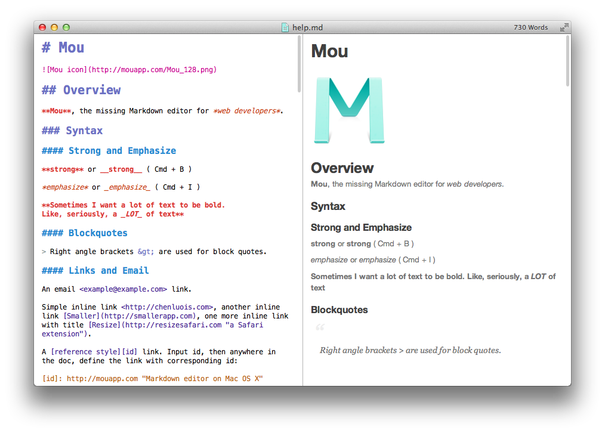

October 7, 2014


When I started writing in Markdown, one of the first editors to draw me in was Mou (you know, after I got sick of writing solely in TextEdit). It was cleaner and faster than many of the editors out there, but what really excited me was the side-by-side Markdown editing and rendering. I loved the fact that when I created a link, I could see it instantly formed in the right pane—and if I fudged it up somehow, it was easy to find the error.
But then Mou decided the development of the app was too taxing, tried to sell it, then kind of stopped supporting it after no offers were made. It was a sad day for Mou fans, and many of us scattered to various apps. For me, I’ve been playing around with MacDown as a replacement for the Mou experience and Byword for more of a pure writing tool, but still find myself using Mou from time to time—just for the nostalgia (or because I still have it as my default app for opening .md files).
So when I recently found that Chen Luo, the developer of Mou, was looking to build a team to continue the app’s development, I was thrilled.
Read more →
October 7, 2014

Australian web developer and tech entrepreneur Stephen Phillips grew up with music in his life from an early age; he played guitar, sang, and even recorded an album, inspired by the successes of popular Aussie rock bands like INXS and Midnight Oil. But his star ascended when he co-founded a little company called We Are Hunted that was subsequently acquired by Twitter in 2013.
Read more →
September 30, 2014

The shorter .nz domains have arrived! Now you can purchase New Zealand’s country-code domain extension without the additional ‘.co’, ‘.net’ or ‘.org’. This naming convention is already common in most countries, and we’re pleased to now be able to offer this option to iwantmyname customers.
Read more →
September 27, 2014
Anil Dash wrote a great article yesterday titled “15 Lessons from 15 Years of Blogging,” and if you’re a blogger (or just a blogger at heart), there’s so much good stuff here.
Read more →
September 12, 2014

Hello,
I have published articles occasionally online. So far, I’ve tended to write about football – here’s my most recent effort: brightonion.svbtle.com. They don’t get read by many people but they seem to be appreciated by those who read them. I chose Svbtle to write because I liked the minimalist design and, as it was an ad hoc project, I didn’t want to pay. Now Svbtle have started to charge for new users and existing users have to cough up for extra services. As an occasional writer I’m reluctant to commit to paying $6 every month.
As I enjoyed writing those articles I’m planning to write more regularly and possibly about other topics. But, initially at least, not I don’t envisage writing regularly enough to pay a monthly fee.
I think that one of the blogging services that you recommend may suit me: Roon.io. It has a similar minimal look which I like, most of the services are free, and I can add a domain, which is something that appeals if all goes well. However, you also recommend other similar minimalist sites, and there are many more out there. Also, most of the research I’ve done online recommends using Wordpress as it is more versatile in the long run.
So, my questions are:
- Do you think that Roon.io is suitable for my current needs?
- Would you recommend a Wordpress site? Or would this be more suitable for a more regular blogger or if my output becomes more regular?
- Given my requirements, what would be the advantages of adding a domain to where I post my articles?
Thank you in advance,
Peter McFarlane
Read more →
September 9, 2014


A few weeks ago we quietly released an almost completely reworked domain name search engine. Our older system, of which there had already been several iterations, was no longer coping with our incremental growth and the dozens of new top level domains being released each month (with 500+ more still due to launch). Not only are more people searching for domains, but the number of domains searched was stretching our old domain search engine’s limits.
Read more →
August 30, 2014

If you’re interested in domain names or like to follow the domain name industry, it’s good to take a step back every once in a while to look at the new gTLD (generic top-level domain) trends that are emerging. iwantmyname’s business model really doesn’t benefit from the popularity of one domain extension over another, but for us, this is perhaps the most exciting namespace expansion we’ll ever see. I mean, there’s a real chance that decades from now we’ll all look back at the early days of the internet and laugh about how everything used to end in .com. We’re still at the beginning of this whole “internet naming” thing, but the scaffolding for the future is being constructed before our very eyes. Here are some of the trends we’re noticing today.
Read more →
August 28, 2014

There are countless sites on the web dishing out advice for how you should name your website/company, but sometimes the very best recommendation is to look at what’s currently popular. And Domain Name Wire recently found a great site for this—Domain Punch.
Read more →
August 26, 2014
Quietly resting on my desktop nav, next to the icons for Twitter, Dropbox, OnePassword, Wifi and Finder, is the stylized Droplr drop—arguably one of the most useful apps on my computer. It doesn’t do a whole lot, but what it does, it does quite well.

Read more →
August 20, 2014


The one truth about growing a company is that at some point you’ll run out of qualified friends to employ. For us, our first hire outside of that group was a developer, because we badly needed someone who was good at the things we sucked at. And our hire was a good one, as he is an absolute expert in his field—but his most important trait was that he fit in really well with the team. Ever since our first hiring experience, we’ve made fitting in a top priority when adding team members, and it’s worked out extremely well.
Read more →
Older posts